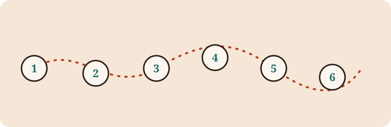

Fora Technologies
This page walks through a typical purchasing journey, from reading the menu to leaving a review. It describes the general steps only; it makes no claims about specific products, prices or numbers.

Ordering
The customer chooses items and places the order, whether at a counter, at a table or on a device. The order should be confirmed back to the customer so mistakes are caught early.
Till
The till records the order and the total. It connects what the customer asked for to the kitchen or the staff who prepare it, and keeps a record of the sale.
Payment
The customer pays using whichever methods the venue accepts. The total should be shown before payment, and a receipt should be available on request.
Reviews
After the visit the customer may share feedback. Reviews help the venue learn what works and help other customers decide.
See Extras for signage, other in-venue items and contact.